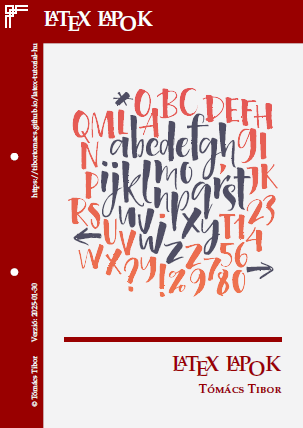

Az alábbi könyvek a LaTeX magas szintű dokumentumleíró nyelv világába vezetik be az Olvasót. Az ezekben ismertetett tananyag alapjait az egri Eszterházy Károly Katolikus Egyetem Matematikai és Informatikai Intézetének „Számítógépes szöveg- és kiadványszerkesztés” című előadásai és gyakorlatai képezik, de azt jelentősen kibővítve.
Ma már a világ minden felsőoktatási intézményében ismert és standardként használt kiadványszerkesztő eszköz a TeX-rendszer. Ennek része a LaTeX magas szintű dokumentumleíró nyelv is. Ezzel a rendszerrel az 1990-es évek elején ismerkedtem meg. Azóta számos tananyagot, könyvet és cikket szerkesztettem vele, illetve egy folyóirat technikai szerkesztőjeként napi szinten használom.
Reményeim szerint a LaTeX megismerése után az Olvasó természetesnek veszi majd, hogy szakdolgozatának vagy bármely más jellegű publikációjának, dokumentumának elkészítéséhez ezt a rendszert használja.
Dr. Tómács Tibor (szerző)
| Tómács Tibor: LaTeX (kézikönyv kezdő és haladó felhasználóknak) |
Tómács Tibor: LaTeX LaPoK (kezdő felhasználóknak) |
Tómács Tibor: LaTeX tévhitek (gyakorlott felhasználóknak is) |
|  | ||